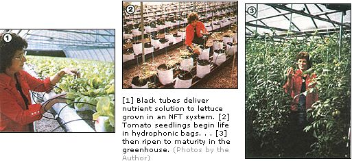

People who grow in glass houses can make money . . . if they love gardening and get the facts first.
Around most folks' kitchens, fresh produce is worth its weight in gold during the winter months . . . and - for that reason - it's not uncommon for home gardeners to dream of building greenhouses and growing vegetables to sell. Well, those fantasies can be transformed into profitable realities if the wouldbe grower will take time to gather in-depth information about the business before he or she invests any cash in it.
There are various methods of gathering the technical data you'll need in order to decide whether or not "under glass" gardening is for you. Perhaps the best way to begin would be to attend a greenhouse vegetable grower's "short course" or conference. However, although such seminars are usually billed as basic classes, you may well find yourself overwhelmed if you go into one without at least some understanding of horticulture. If that's the case, though, don't let the experience discourage you. Just pay close attention, take detailed notes (or make tapes), stop other students in hallways to ask questions when necessary, and attend the trade shows to talk with suppliers . . . and you'll accumulate a great deal of information.
A two-day course might cost $200 to $500, but it could save you thousands of dollars in trial-and-error learning. Don't put out any money, however, without asking yourself a few searching questions.
CONSIDER THE FIELD
First of all - setting aside lifestyle considerations for the moment - ask yourself whether you really need a greenhouse to grow income crops. After all, if you can afford to pay cash for five or more acres of fertile land, you might be better off growing vegetables intensively in the open, rather than in a greenhouse. There are "field techniques" - such as utilizing simple (unheated) plastic canopies to lengthen your growing season - that can help you bring your harvests to market earlier and later than your competition. By adopting such methods, you can even shut down your operation during the worst of winter and maintain your contacts with grocery, restaurant, and institutional buyers by delivering stored vegetables or forced delicacies.
And even if intensive field gardening doesn't appeal to you, you'll still need to consider whether having a commercial greenhouse will be feasible in your location. Remember that the farther north you are, the higher your heating bills will be . . . especially in regions where wintry days are likely to be windy or cloudy.
Although a few new vegetable greenhouses have opened recently in the North, the "growing under glass" industry there is pretty much either holding static or declining. So find yourself a map and draw a rough line from Columbia, South Carolina to Dallas, Texas. Potential net profits from greenhouse vegetables tend to increase south of that line. To the west of Dallas, however, the altitude of the land will determine the effectiveness of the operation. The best opportunities there will be at low elevations in warm valleys or at higher levels where the more frequently clear winter days increase the efficiency of solar heating systems.
My point is that growing healthy, nutritious vegetables during short, gloomy winter days can be both profoundly difficult and expensive. Of course, moneysaving solar-heated greenhouses are practical in southern locations, but even there they require backup furnaces and water heaters . . . and such equipment can easily double the up-front cost of the basic structure. (In the South, most new greenhouse operations are opening up in places where growers can harvest or buy wood at reasonable prices. Wood- or coal-fired furnaces and water heaters have replaced many electric, propane, and natural gas units.)
NEXT QUESTIONS
OK, let's suppose you're already residing in a southern location, or are willing to move to one. Now, I'd like you to consider the extra heat and humidity you'll have to endure when working in that greenhouse during the South's semitropical summers . . . and to ask yourself whether you're willing to contend with twice the number of plant diseases and insects that you'd have to deal with up north (where, as I've said, your costs would be much higher).
Once you have a particular locality in mind, be sure to ask for information on area utility rates . . . especially electricity, water, and sewerage. Even if you go solar - with wood or coal as backup - you'll need lots of electricity to run motors. For example, during hot weather the half-horse motors hooked to the two fans cooling a 30' X 96' greenhouse will run as much as 18 hours during the day . . . and often at intervals during the night as well. "Juice" will also be required to run pumps for circulating water and nutrients . . . and to power timers, solenoids, vent actuators, and packaging equipment.
You should also realize that the amount of water consumed by plants in greenhouses can be staggering. Keep in mind that some cities with newly installed or renovated water systems have high rates . . . and many have ordinances prohibiting the digging of new wells.
Are you still with me? Well then, think about your finances one more time. Ask yourself whether you can afford to buy at least one-half to one acre of well-drained land within easy driving distance of a medium- to large-sized city. If so, go on to decide if you can also afford to fence it against thieves and vandals . . . to build or buy a house on the property or adjacent to it . . . and to pay cash for a fully equipped starter greenhouse.
And why, you might well wonder, do I recommend that the greenhouse be near a city? Well, it's indeed possible to run a successful operation 100 miles out in the country and make a living at it, but the distance will add to your transportation and marketing problems. Would-be greenhouse growers need to concentrate on raising vegetables, not running a truck line.
You should next decide whether you'd want to pursue the business full or part time. Studies indicate that a family can operate a 30' X 96' greenhouse in their spare hours and net $10,000 annually from it, assuming they aren't paying interest on money borrowed to setup their operation. Indeed, a majority of family-owned vegetable greenhouses seem to be run to augment other sources of income, and to accumulate savings for eventual expansion of the business.
Working on a full-time basis, a couple - along with a good hired hand - can operate four standard greenhouses and gross $50,000 or more annually. It's true that the net income may suffer in larger operations because more outside help will likely be needed, particularly for packing and shipping . . . but remember that a reliable employee can be crucial to the survival of the business in the event of family sickness or accidents.
Consider, too, whether you'll be happy limiting yourself to raising only one or two kinds of vegetables. Most growers with no more than four greenhouses concentrate on just a few crops, notably lettuce and standard tomatoes. Larger professional operations handle peppers, eggplant, and cherry tomatoes as well. (Lettuce is probably the most profitable crop per square foot of space . . . but it can require about 50% more labor than do, say, jumbo tomatoes.)
GREENHOUSE GUESSTIMATES
Is your pocketbook beginning to feel the pinch yet? Well, we haven't even gotten around to discussing the structure of your greenhouse. High-carbon steel-framed Quonsets or Gothic-arch units that are strong enough to withstand high winds and wet snow, covered with two layers of plastic, and equipped to start your first crop can cost $5 to $10 per square foot (not including the land and site preparation).
In my opinion, at least, anything smaller than 3,000 square feet would hardly be worth building, because the net profit realized from such an operation would make a very minor contribution to a family's income., Many growers actually plan ahead when they build the first structure . . . in order to allow for the construction of additional houses as they become economically feasible.
When estimating construction costs, don't forget such features as large-diameter down spouts and drainpipes to carry rainwater off the roof and into covered, lined ponds. A dependable supply of water that has low to moderate pH and is free of pathogens will become more and more valuable to you as your costs rise. Furthermore, by placing plastic canopies over these ponds, you can trap solar energy and preheat the water.
It's wise to include the cost of drilling a well (if it's allowed in your area) in your budget calculations, too . . . although ground water may need to be treated for greenhouse use. Should it turn out to have a high pH, for example, it'll need to be buffered if it's to keep fertilizers in solution. Well water will also need to be preheated when used during the winter months . . . while lake or pond water can require acidification and filtering for pH modification and for the control of algae and pathogens.
WAYS TO SELL WHAT YOU GROW
Of course, the most successful greenhouse operators not only take pleasure in producing their vegetables, but also enjoy marketing them. I spoke to a professional hothouse gardener who pretty much summed up the prevailing attitude: When asked what he liked most about his business, he said, "Counting the money."
At the moment, greenhouse owners are unable to turn out enough vegetables to meet the demand . . . so an enthusiastic marketer will have little or no difficulty selling everything he or she produces at a good profit. Still, the situation is changing, and it would be wise to study the local competition closely before investing.
And, though it's possible to sell your produce through alternative channels-farmers' markets, roadside stands, tailgate trucks, gourmet restaurants, and the likethere's really no need to tap those outlets. Supermarket buyers will usually take everything you can produce - week after week - and at a good price, too.
Don't let the seasonal availability of field-grown produce - at low market prices - force you into taking a less than usual sum for your greenhouse vegetables. Timid growers will sometimes permit themselves to be manipulated by supermarket buyers at such times, and then often discover that, although the price they were paid for the produce was lower than normal, the retail price at the store remained the same. You can demand a good fee because you are - in a sense - guaranteeing your clients the production of predictable amounts of consistently high-quality produce . . . standardized and packed to meet the needs of the stores, delivered promptly after harvest, precooled, attractively packaged, and labeled prominently as "greenhouse grown".
THE ORGANIC OPTION
There's a definite market for organically grown produce, too . . . but be warned that many folks feel that raising hothouse vegetables without the use of chemicals can be a nightmare. Even with the best possible ventilation, the high temperatures and humidity of a greenhouse can turn the structure into a perfect incubator for insects and disease.
Fortunately, organic gardeners will usually find that university cooperative extension specialists are sympathetic to their needs and can often recommend biological controls for pathogens, plus nonchemical fertilizers. (Regrettably, only a few biological controls have been widely tested in greenhouse environments . . . Bacillus thuringiensis, soap and water, and predatory mites are some that have.)
For the most part, extension specialists are also convinced that hydroponic methods, including the relatively new Nutrient Flow Technique (NFT), can maximize production (however, they generally recommend that "water growers" respond quickly to disease and insects with appropriate chemical controls). And more and more greenhouse operators are going along with the NFT recommendations, though other hydroponics users continue to raise produce in individual bags of sand - or other lightweight media - which are fed with liquid fertilizer and watered through a trickle system.
LIFESTYLE LIMITS
Now that we've run through the most important physical and economic considerations facing the would-be hothouse horticulturist, let's take a look at the matter of lifestyle. If you were to imagine a stereotype within the ranks of greenhouse gardeners, it wouldn't be a university graduate fresh out of horticulture school. More likely, that "typical" individual would be an engineer or production specialist who has taken an early retirement, owns his or her own home, has up to $50,000 free and clear to invest, and can build or repair almost anything . . . usually with scrounged or adapted materials. Many such people will admit that they hated their career jobs (and often the companies they worked for) and that they've been saving and planning for years to get into the greenhouse business. All of them will say they love to grow plants.
Of course, there is a place in this business for new horticulture graduates, but - although they're qualified - they'll often have to go through months of training with an experienced greenhouse grower before they can earn the kind of salary they likely deserve. It's unfortunate, but the majority of these knowledgeable young people lack the financial resources to go into business for themselves - even after a successful training period - so most will end up working for large-scale growers.
There's also a place for the bright, motivated, mechanically clever person who lacks an advanced education. At first, such a position would likely involve working for a successful greenhouse operator (in any capacity). Later, the eager young (or not so young) man or woman might consider forming a limited partnership to accrue the necessary capital to buy into the business.
Finally, there's a place for dreamers, too. In fact, most greenhouse growers are highly imaginative and innovative . . . and can come up with the kind of problem-solving ideas that result only from creative thinking. However, the greenhouse is no place for the mystic or the idealist. It's a world for perfectionists . . . in a highly scheduled and regulated - yet stimulating and extremely satisfying - way of life.
EDITOR'S NOTE: If you're interested in attending a greenhouse short course or conference, contact your state university's agricultural extension service or horticulture department to find out about the program nearest you.
|
|
 |
|